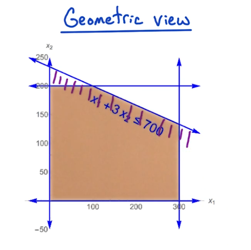
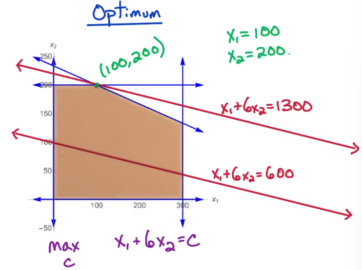
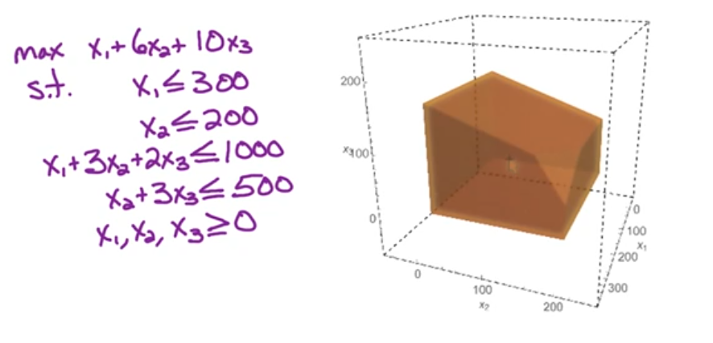
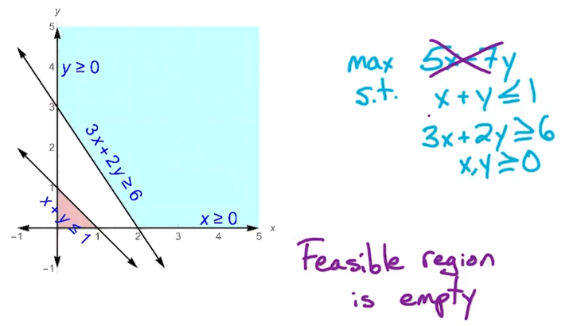
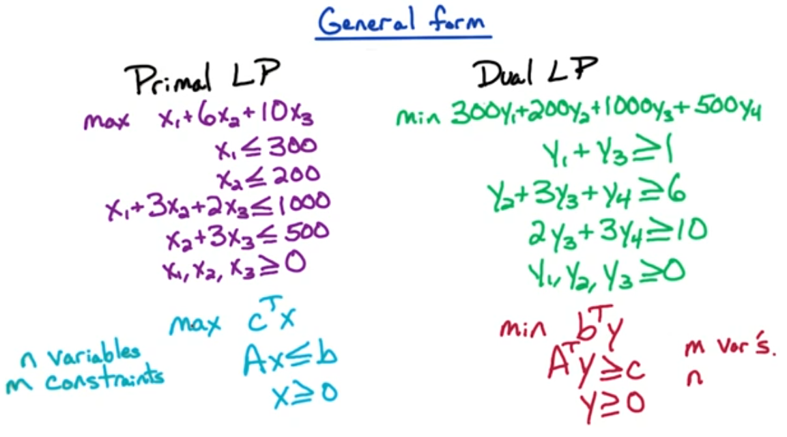

Week 9 — Linear Programming
2026-07-13 → 07-19 · Modules LP1 (Intro), LP2 (Geometry), LP3 (Duality)
Due this week
| Item | Type | Note |
|---|---|---|
| HW9 | written | LP formulation |
| HW10 | written | duality |
| Quiz 7 | content | NP + LP |
Watch the lecture (Linear Programming)
Learning objectives
- Translate a word problem into an LP in standard form (variables, objective, constraints).
- Reason geometrically: feasible region = polytope, optimum at a vertex.
- Mechanically construct the dual, and apply weak / strong duality and complementary slackness.
- Recognize max-flow / min-cut and shortest paths as LPs in disguise.
Core concepts
Standard form
A linear program optimizes a linear objective subject to linear inequalities:
max c⊤x s.t. Ax ≤ b, x ≥ 0.
Intuition. c is the "value per unit" of each variable; rows of Ax ≤ b are resource limits. Everything is linear, so there are no curves — only flat faces meeting at corners.
Key facts.
- Any LP can be put in standard form: a
minbecomesmaxby negating c; an equality a⊤x = b becomes two inequalities a⊤x ≤ b and −a⊤x ≤ −b; a free variable splits as x = x+ − x− with x+, x− ≥ 0. - Three outcomes only: a unique/optimal solution, infeasible (no x satisfies the constraints), or unbounded (objective → ∞).
Feasible region = polytope
The set {x : Ax ≤ b, x ≥ 0} is a convex polytope — an intersection of half-spaces.
Intuition. Each inequality cuts off a half-space; the feasible region is what survives all the cuts. Convexity means the segment between any two feasible points stays feasible.
Optimum-at-a-vertex. A linear objective pushed across a convex polytope is maximized at a vertex (corner). So you never need the interior — only the finitely many corners. This is exactly why simplex works.
Geometry & simplex
Simplex starts at a vertex and repeatedly moves to an adjacent vertex with a better objective, stopping when no neighbor improves (that vertex is optimal, by convexity).
- A vertex in n dimensions is where n linearly independent constraints are tight.
- Worst-case exponential, but fast in practice; polynomial-time LP solvers exist (ellipsoid, interior-point), so LP is in P.
Duality
Every primal LP has a dual with one dual variable per primal constraint (and vice versa):
| Primal (max) | Dual (min) |
|---|---|
| max c⊤x | min b⊤y |
| Ax ≤ b | A⊤y ≥ c |
| x ≥ 0 | y ≥ 0 |
Intuition. The dual variable yi is the price of constraint i — how much the optimum would improve if you relaxed that constraint by one unit (its shadow price).
Complementary slackness
At optimality, primal and dual solutions interlock:
yi > 0 ⇒ (Ax)i = bi and xj > 0 ⇒ (A⊤y)j = cj.
In words: if a constraint isn't tight, its price is 0; if a variable is used, its dual constraint is tight. This is the certificate that a primal/dual pair is jointly optimal.
Algorithms
Build the dual — mechanical recipe
- Put the primal in standard form (max , Ax ≤ b, x ≥ 0).
- Introduce one dual variable yi ≥ 0 per primal constraint.
- Objective min b⊤y.
- One dual constraint per primal variable: A⊤y ≥ c.
- Sanity check by counting: #dual variables = #primal constraints, and vice versa.
| Primal | Dual |
|---|---|
| variables xj | constraints (one per xj) |
| constraints ≤ | variables yi ≥ 0 |
| objective max c⊤x | objective min b⊤y |
Key theorems & results
Weak duality
For any primal-feasible x and dual-feasible y:
c⊤x ≤ b⊤y.
Proof sketch: c⊤x ≤ (A⊤y)⊤x = y⊤(Ax) ≤ y⊤b, using c ≤ A⊤y, x ≥ 0, then Ax ≤ b, y ≥ 0. Every dual-feasible y is thus an upper bound on the primal optimum. ∎
Strong duality
If both LPs are feasible, their optima are equal:
maxxc⊤x = minyb⊤y.
So a matching pair (x⋆, y⋆) with c⊤x⋆ = b⊤y⋆ proves both are optimal — no search needed, just exhibit the certificate.
Max-flow / min-cut is LP duality
Max-flow is a primal LP (maximize flow value subject to capacity + conservation); its dual is exactly min-cut. Strong duality ⇒ max-flow = min-cut (W6). This is the bridge from graphs into LP, and the canonical example of duality "meaning something."
Worked example
Primal:
max 3x1 + 2x2 s.t. x1 + x2 ≤ 4, x1 ≤ 3, x1, x2 ≥ 0.
Two constraints → two dual variables y1, y2 ≥ 0. Dual:
$$ \min\ 4y_1 + 3y_2 \quad\text{s.t.}\quad \underbrace{y_1 + y_2 \ge 3}_{x_1\text{'s column}},\ \ \underbrace{y_1 \ge 2}_{x_2\text{'s column}},\ \ y_1,y_2 \ge 0. $$
Primal optimum x = (3, 1) gives 11; dual optimum y = (2, 1) gives 4(2) + 3(1) = 11 — equal, as strong duality promises.
Common pitfalls / exam traps
- Forgetting to convert to standard form before dualizing (sign/direction errors follow).
- Swapping which gets a variable vs a constraint — primal constraint ↔︎ dual variable.
- Claiming a vertex optimum exists when the LP is unbounded or infeasible.
- Treating the dual objective sense wrong: primal
max↔︎ dualmin.
How to answer (HW / exam)
"Write the LP" → list the variables, the objective, and every constraint explicitly (including ≥ 0). For duality, pair each primal constraint with a dual variable and flip max↔︎min via the table; verify with weak duality (dual value bounds primal) or complementary slackness.
Go deeper — readings
Comprehensive Notes
LP1: Linear Programming
Let's begin by looking at how we express max flow as a linear program — a problem of optimizing a linear objective subject to linear constraints.
Key idea. Many problems (max-flow among them) can be cast as an LP: choose values for a set of variables to maximize or minimize a linear objective while satisfying a system of linear inequalities. This reframing unlocks general-purpose LP machinery and the theory of duality.
Recall, for the Max-Flow problem
- Input: Directed Graph G(V,E) with ce > 0 for e ∈ E
Our LP formulation will be somewhat different. We'll have m variables, one for each flow along an edge. fe for each e ∈ E. Furthermore we'll have an objective function that we are trying optimize, Which should be a linear function of the variables.
Recall that in a max flow, we're trying to maximize the size of the flow, as measured by the size of the flow (a) out of the source vertex, or (b) into the sink vertex. Which one we choose doesn't matter as they must be the same.
- Objective Function: $\max(\sum_{\overset{\rightarrow}{sv}} f_{sv})$
- Constraints:
- for every $e \in E \\ 0 \le f_e \le c_e$ - the flow can be at most the capacity
- for every v ∈ V \ {s, t}
- $\sum_{\overset{\rightarrow}{wv}} f_{wv} = \sum_{\overset{\rightarrow}{vz}} f_{vz}$ Flow in == Flow out of v
- flow must be conserved
Consider the following toy example which models a basic production/manufacturing problem.
2-Dimensional Example
Problem statement. A company makes products A and B. We'd like to determine how many of each should we produce to maximize profit.
Details:
- The profit on each unit of A is $1, and for B it is $6
- The demand for A is ≤ 300 units, and for B it is ≤ 200 units
- We have a total of 700 hours capacity among our employees
- a unit of A requires 1 hour
- a unit of B requires 3 hours
In order to move forward we need to format this as an LP problem and we need to formulate our objective function.
- let x1 be the # of units of A to produce in a day
- let x2 be the # of units of B to produce in a day
- then our objective function is: 1x1 + 6x2, which we will maximize
Of course we can't forget about our constraints right?
- (supply) 1x1 + 3x2 ≤ 700, this ensures we have the available man power
- (demand) 0 ≤ x1 ≤ 300 and 0 ≤ x2 ≤ 200 to ensure we don't make more than the possible demand
Formally
- Maximize x1 + 6x2
- Subject to the constraints
- x1 ≤ 300
- x2 ≤ 200
- x1 ≥ 0
- x2 ≥ 0
- x1 + 3x2 ≤ 700
For a minute let's consider this from a geometric point of view in a 2 dimensional plane. (2dim for the 2 variables). For now let's ignore the objective function and just look at the five constraints. Each of the five constraints is a half plane. (recall that equality would produce a line, so an inequality produces a half plane containing all feasible values). In this situation all 5 constraints will come together to form a bounded area that is the intersection of all their planes. All points in the intersection are the feasible values of X where X is a solution to the objective function. Of course only one of these will be a max, optimal, value.

Consider the above diagram which illustrates our problem geometrically. Now we can apply our objective function using values inside our feasible region.
Example 1: x1 + 6x2 = 600
is one solution in the feasible region but is certainly not
optimal.
Example 2: x1 + 6x2 = 1300
is another solution and is in fact the optimal solution.

Now, this was a simple two dimensional example. Let's look at a simple three dimensional example and then we'll get some idea of how it generalizes to higher dimensions.
Let's pause for a moment to consider from key issues that could arise:
- Handling fractional values. In our example we got a bit lucky in that the optimal value occured at an integer valued point. But this is not always the case. If you only want integer values then you can round fractions to the closest feasible integer.
Key point 1 — LP is polynomial; integer-LP is not. Linear programming optimizes over the entire feasible set and so is solvable in polynomial time (ie LP ∈ P). But the problem of looking for the optimal integer-valued solution is NP-complete (ie integer-LP is NP-Complete).
Key Point(2) here is that in our problem the optimal solution lies at a vertex, or corner, of our feasible space. Suppose this optimal line intersects a point such z which is between two vertices, so it is not a vertex itself. Therefore, it must be the case that one of these two endpoints of this edge must be better than this point Z, or it has to be the case that this optimal line intersects this edge. If this optimal line intersects this edge, then all the points on this edge are optimal. Therefore, the two endpoints are both optimal and therefore an optimal point lies at a vertex.
The last important concept is convexity. This feasible region, this tan region is convex. Because the feasible region is defined by the intersection of half spaces, it must be a convex set.
Since it's convex, if we have a vertex such as this point (100, 200) which is better than its neighbors, these two points, well, the feasible region can't go down and then back up.
So, if this point is better than its neighbors, then the entire convex region, the entire feasible region is below these two lines. Therefore, this point is optimal because if a point is better than its neighbors, then that vertex is an optimal point.
The key consequence of convexity. The optimal point always lies at a vertex of the feasible region. There may be other optimal points too, but there will always be a vertex that is optimal.
These two key points lead to the simplex algorithm, which we'll detail later. For now, a brief sketch:
- We'll start at some vertex of the polygon.
- We'll check its neighbors and we'll look if any of its neighbors are better.
- Then we'll move to a neighbor which has a better objective function
- we continue until we find a vertex of the polygon in the feasible
region
- which is better than all of its neighbours
- and is therefore optimal
That's the basic idea of the simplex algorithm. Now let's move on to another three dimensional example.
3Dim Example
Let's twist the previous example and make it a bit harder.
- Three products A,B, C
- Profit: $1 for A, $6 for B, and $10 for C
- demand: ≤ 300 for A, ≤ 200 for B, unlimited demand for C
- hourly Supply: ≤ 1000 in total, A takes 1, B takes 3, C takes 2
- Packaging: ≤ 500 in total, B takes 1 and C takes 3, A takes nothing
We formulate as an LP problem. Using three variables: x1 for A, x2 for B, x3 for C
- we want to max (x1 + 6x2 + 10x3)
- subject to the constraints
- demand : x1 ≤ 300 and x2 ≤ 200
- supply: x1 + 3x2 + 2x3 ≤ 1000
- Packaging: x2 + 3x3 ≤ 500
- x1, x2, x3 ≥ 0
- we always add this as it doesn't make sense otherwise
Here's a geometric view

Standard Formulation
By now you should see a bit of pattern emerging in these types of
problems.
Now we look at how to formulate an arbitrary problem.
- for variables x1, x2, …, xn
- your objective function will be of the form
- max (c1x1 + c2x2 + … + cnxn)
- you're contraints will be of the form
- a11x1 + … + a1nxn ≤ b1
- you can have up to m constraints
- am1x1 + … + amnxn ≤ bm
- of course, never forget your non negativity constraint
- x1, x2, …, xn ≥ 0
This is pretty annoying to type out so let's switch to matrix notation
- Variable Vector = xT which is our variables x1, x2, …, xn
- Co-efficients = cT
- then our objective function is max (cTx) ( we will always use max - see comments below )
- similarly our contraints can be formulated as
- Ax ≤ b
- where A is the constraint coefficients, m x n Matrix
- b is the boundary values vector
- x is the variable vector
- our non-negativity constraint is straigh forward
- x ≥ 0
Some Considerations to formulate a problem into the standard form above:
- For minimum problems multiply by -1 and maximize
- for a problem of the form Ax ≥ b, where b is
the lower bound,
- we once again multiply by -1 to get the equivalent (−1)Ax ≥ b
- for an equality problem Ax = b
- we use two objective functions
- (−1)Ax ≥ b
- and $ A x \ge b$
- what about a constraint like $x \<
100$
- NOT ALLOWED - LP does not allow for this as it is ill-defined. LP problems must be well defined
- What about an unconstrained x? when the problem doesn't force it to
be positive nor negative
- This one is trickier, here we set x = x+ − x−
- where x+ and x− represent the magnitude of x
- and x+ ≥ 0
- and x− ≥ 0
Geometric View
- We have n variables meaning n dimensions
- n+m constraints
- what is our feasible region?
- Each constraint represents a half space
- and the feasible region is the area constrained by the n+m constraints
- so the feasible region is the region inside the n+m half spaces
- this is a convex polyhedron
Let's now consider the vertices of the feasible region
- is the set of points satisfying
- (1) n constraints with = (equality)
- and (2) m constraints with ≤ (inequality)
- this works out to ... $\le {n+m \choose
n}$ vertices
- this is exponential in n
- Further it has at most nm neighbours
- ≤ nm neighbours
LP Algorithms: Polynomial-time
- Ellipsoid algos
- interior point methods
Exponential time:
- Simplex Methods
- this is by far the most widely used despite it's terrible runtime
- guaranteed to return the optimal solution
- Works great on huge LP problems
Simplex Method
Start at x=0
look for neighbour vertex with higher objective value
if found then move to neighbor vertex
go back to look
else
output current vertex x
# the x that is returned
# is guaranteed to be the global optimalIn case you didn't notice the algo is walking from vertex to vertex in a strictly uphill fashion. The optimal value is at the top of this hill.
Simplex Example 3Dim
Let's demonstrate simplex on our 3dim problem from earlier
Recall : We formulate as an LP problem. Using three variables: x1 for A, x2 for B, x3 for C
- we want to max(x1 + 6x2 + 10x3)
- subject to the constraints
- x1 ≤ 300
- x2 ≤ 200
- x1 + 3x2 + 2x3 ≤ 1000
- x2 + 3x3 ≤ 500
- x1, x2, x3 ≥ 0
start profit
(0 , 0, 0) 0
(300, 0, 0) 300
(300,200, 0) 1500
(300,200, 50) 2000
(200,100,100) 2400
-> from here there are no neighbours with a higher obj value
-> t/f we declare this to be the optimal pointLP2: LP Geometry
Recall our basic LP formulation:
- For n variables
- we may have up to m constraints in the form Ax ≤ b with x ≥ 0
- an objective function of the form max (cTx)
With the characteristics
- the feasible region is a convex set
- where the feasible region is the set of x values that satisfy the m constraints
- each m constraint defines a half space
- the intersections of these regions is the vertices
What we get when the above is true is a convex polyhedron
The simplex method walks along the vertices, or corners, of the polyhedron. In general the optimum will always lie at a vertex of the feasible region. However, there are a few situations which provoke an exception.
- Exception 1: when the LP is infeasible
- this can happen when the feasible region is blank/empty
- consider
- func: max(5x-7y)
- st: x + y ≤ 1, 3x + 2y ≥ 6, x, y ≥ 0
- take the time to draw this out to see that the feasible region is in fact empty
- infeasiblity has nothing to do with the obj function

- Exception 2: When the LP is unbounded
- this can happen when the optimal is arbitrarily large
- consider
- func: max(x+y)
- st: $ x - y \le 1$, x + 5y ≥ 3, x, y ≥ 0
- if you were to draw this out you'd see that the objective function can keep increasing as y increases up the y-axis
- consider, a slight change to the previous example
- func: max (2x − 3y)
- st: $ x - y \le 1$, x + 5y ≥ 3, x, y ≥ 0
- in this situation there is in fact in fact an optimum
- if you were to draw this out you would see a feasible region similar to the previous configuration
- However, the maximum of the objective function lies at the very bottom vertex
There is a key difference between max (x + y) and max (2x − 3y). Consider what the value is as x and y increase? In the first case the result is an increasing value, hence the difficulty.
Both of these situations beg the question, how can we determine if a region is feasible/bounded? For now we consider the feasibility. In the next section we look at handling unbounded objective through the use of LP Duality
Feasiblity
In order to determine if an LP is feasible we begin with our LP in standard form:
- max (cTx)
- Such that
- Ax ≤ b, and
- x ≥ 0
Is there an x that satisfies all the constraints?
Here's how to answer this question:
- Step 1: make a new variable z ( not a vector, just a single variable )
- Step 2: Consider a single constraint
- say a1x1 + a2x2 + ⋯ + anxn ≤ b
- and x1, x2, ⋯, xn ≥ 0
- Step 3: Add z into our constraint
- i.e. a1x1 + a2x2 + ⋯ + anxn + z ≤ b
- we make no change to the nonnegativity constraint
- z is unconstrained and can take on any value whatsoever (positive or negative)
- if z is sufficiently close to zero we get the trivial solution
- so we set $z = -\infty $ ( but in fact it will be a finite number and not actually infinity
- Step 4: find a solution
- to a1x1 + a2x2 + ⋯ + anxn + z ≤ b
- when z ≥ 0
- if a solution can be found when z is greater than 0
- then you can drop z and still have a solution
- Step 5: Generalize to all constraints
- if you found a z in step 4 then you need to do this for all coefficients a1 to an
- In other words you need to find a z ≥ 0 for the modified LP
- max(z)
- for Ax + z ≤ b
- with x ≥ 0
- This new LP will always be feasible,
- partly because there is always a trivial solution for a small enough z
- however, only when z is greater than 0 can the solution carry over
to the original LP
- because we can just ignore/drop the z term
- if the optimal value of z is negative,
- then we can say the original LP is infeasible
LP Duality
Overview
- Motivating example to build our intuition
- General Form
- Weak duality Theorem
- Strong duality Theorem
recall our earlier example
- we want to max(x1 + 6x2 + 10x3)
- subject to the constraints
- x1 ≤ 300
- x2 ≤ 200
- x1 + 3x2 + 2x3 ≤ 1000
- x2 + 3x3 ≤ 500
- x1, x2, x3 ≥ 0
Also recall that we ran the simplex method to find that
- optimal point = (200,200,100)
- with objective value = 2400, profit
So how do we verify that this is an optimal point? without running the algo again. What if someone told us this was the optimal solution, how can we check their claim?
What we will try to do is find an upper bound on the objective function, such that the upper bound value is equal to/at most our profit solution. This will imply that our solution is in fact a maximum.
For our above example
- consider y = (y1, y2, y3, y4) = (0, 1/3, 1, 8/3) ( we will show later how we came up with these values )
- here y is 4 dimensional
for the purposes of our explanation we will number the number the constraints from above
- x1 ≤ 300
- x2 ≤ 200
- x1 + 3x2 + 2x3 ≤ 1000
- x2 + 3x3 ≤ 500
- we ignore the non-negative constraint
Now we know that any feasible point must satisfy all these constraints, but it must also satisfy any linear combination of the constraints
- so for example y1 * (1) + y2 * (2) + y3 * (3) + y4 * (4) should also be satified
Let's write this all out
- y1 * (1) + y2 * (2) + y3 * (3) + y4 * (4)
- $\iff y_1 x1 + y_2 x2 + y_3(x1 + 3x2 + 2x3) + y_4(x2 + 3x3) \le 300
y_1 + 200 y_2 + 1000y_3 + 500y_4 $
- what we've done here is multiply the constraints by the y vector in rowwise fashion to get the linear combination
- each constraint, yn represents a row/constraint
- Now we can simplify and collect terms
- ⇔ x1(y1 + y3) + x2(y2 + 3y3 + y4) + x3(2y3 + 3y4) ≤ 300y1 + 200y2 + 1000y3 + 500y4
- Now we use the values to reduce
- for (y1, y2, y3, y4) = (0, 1/3, 1, 8/3)
- we get $x_1 + 6x_2 + 10x_3 \le 2400 $
- pretty funny right?
- We did all that work just to come up with the obj function of the original LP in our example. of course that's the point though.
- In doing so we have verified our original solution
Let's turn our attention back to our y values. how did we come up with the y values? There must be some logic right?
It should be noted that any solution that is at least the original obj value function is also valid so long as the inequality still holds. ie x1 + 9x2 + 25x3 is also valid because it still serves as an upper bound on the obj function
What we need is our co-efficients to be at least the coefficients in
the obj function.
t/f
- (y1 + y3) ≥ 1 due to x1 term
- (y2 + 3y3 + y4) ≥ 6 due to x2 term
- (2y3 + 3y4) ≥ 10 due to x3 term
Since these serve as an upper bound on the obj function, We will want to determine the smallest upper bound. Which means we want to find the minimum of the right hand side of the inequality.
- ie min (300y1 + 200y2 + 1000y3 + 500y4)
Of course this should look very suspicious to you, it's another LP. In fact this is known as the DUAL LP. Where as in the original LP we had ≤ constraints now we have ≥ constraints. In the original LP, aka the PRIMAL LP we had a maximization objective function now we have a minimization function. Of course we know how to adjust an LP to get into a canonical form for solving so solving the dual lp is not much different than solving the original LP.
It pays to take a moment to consider the symmetry between the two LPs.
- the number of constraints in the primal lp is the number of variables in the dual lp
- the number of variables in the primal lp is the number of constraints in the dual lp
- the coefficients of the primal objective function are the lower bounds of the constraints in the dual lp
- the upper bound constraints in the primal lp are the co-efficients of the dual lp obj. function
- the left hand side of the constraints in the dual lp
- are a linear combination of the contributing constraints in the primal lp
NB: The Dual LP must also have non-negative constraints!!

Now things can get a little weird
- Suppose you have a primal lp, call it LPprimal
- then we can find/create the dual LP, call it LPdual
- to put it in canonical form we multiply by -1,
- results in flipping the inequalities in the constraints
- as well as flipping the min to a max in the objective function
- Now what's the dual of -1*LPdual?
- Suppose we compute the dual of the dual
- we get another dual
- but then we go through the transformation process to get it into canonical form
- the result should be the original primal LP with a third variable
- this third LP is for all intents and purposes the original primal LP
NP: The dual of the dual LP is simply the primal
LP
Dual(Dual) = Primal
Example
You are given the following LP
- max (5x1 − 7x2 + 2x3)
- Subject to
- x1 + x2 − 4x3 ≤ 1
- $2x_1 - x_2 \ge 3 $
- x1, x2, x3 ≥ 0
You are asked the following questions:
- How many variables/contraints are in the dual LP
- What is the dual LP?
- Should be rather straight forward.
- There will be 2 variables in the dual LP, one for each constraint
- There will be 3 constraints in the dual LP, one for each of the primal LPs variables
- Computing the dual LP is purely mechanical.
- First we re-write the primal LP in canonical form
- max (5x1 − 7x2 + 2x3)
- Subject to
- $ x_1 + x_2 - 4x_3 \le 1$
- $-2x_1 + x_2 \le -3 $ - we multiplied by -1 to flip the inequality
- $ x_1,x_2,x_3 \ge 0$
now we can begin filling out the coefficients of the dual LP
- we begin with our shell
- min (ay1 + by2) s.t. ? ≥ ?; ? ≥ ?; ? ≥ ?; y1, y2 ≥ 0
- we begin with our shell
- we can read off the lower bounds from the original LP
- min (ay1 + by2) s.t. ? ≥ 5; ? ≥ −7; ? ≥ 2; y1, y2 ≥ 0
- we can read off the lower bounds from the original LP
- the constraints upper bounds become the dual LP obj function
co-efficients
- min (1y1 + −3y2) s.t. ? ≥ 5; ? ≥ −7; ? ≥ 2; y1, y2 ≥ 0
- the constraints upper bounds become the dual LP obj function
co-efficients
- Now we can fill in the co-efficients of the constraints by looking
at each variable in the primal
- think of this in terms of matrices, all the x1 variables should be a single column
- y1 + −2y2 ≥ 5;
- y1 + y2 ≥ −7;
- −4y1 ≥ 2;
- Now we can fill in the co-efficients of the constraints by looking
at each variable in the primal
- Finally we can put this all together in a single LP. All we're doing
here is clean up and presentation, no math :)
- min (1y1 + −3y2)
- Subject to
- y1 + −2y2 ≥ 5;
- y1 + y2 ≥ −7;
- −4y1 ≥ 2;
- y1, y2 ≥ 0
- Finally we can put this all together in a single LP. All we're doing
here is clean up and presentation, no math :)
LP3: Duality - Weak and Strong
Weak Duality Theorem
For a feasible point x for the primal lp, and a feasible point y for the
dual LP
- we have cTx ≤ bTy
- ie LPprimal(x) ≤ LPdual(y) for feasible points x and y
- in other words the dual LP at any feasible point is an upper bound on the primal LP
Corollary
- if cTx = bTy
for feasible points x,y then x,y are optimal
- it should be stressed that this is a one-way implication.
- two optimal points need not imply equal objective values
- there are certain conditions where it is a two way implication and that is called the strong duality theorem. this will be covered a few lines below
Corollary 2
- if the primal LP cTx is unbounded then the dual LP is infeasible
- similarly
- an unbounded dual LP would imply an unfeasible primal lp, since the primal is the dual of the dual
You should be able to see why this is true. An unbounded lp cannot have an upper bound
Recall how we check an LP
- Given an LP in canonical form
- max (cTx) subject to Ax ≤ b and x ≥ 0
- to check for feasiblity
- we add an extra variable z to the constrain ie Ax + z ≤ b
- to check for unboundedness
- we could check if the dual is feasible or not
- if the dual is infeasible then by weak duality the primal could be
infeasible or it could be unbounded
- so we check if the primal is feasible
- assuming it has one feasible point
- then we check if the dual is infeasible
- if the primal has at least one feasible point, then all that is left in unbounded
Strong Duality Theorem
- Primal LP is feasible and bounded ⇔ dual LP is feasible and unbounded
- Equivalently
- Primal LP has an optimal solution x ⇔ Dual LP has an optimal solution y
- ie cTx* = bTy*
Although it is not very obvious the max-flow min-st.cut theorem is a mirror/reflection of this theorem. It turns out that
- cTx* - is the max-flow through a flow network
- bTy* - is the capacity of the min-st.cut
DPV chapter exercises
DPV chapter exercises (exact, from the textbook)
Exact end-of-chapter exercises, parsed from the DPV chapter PDFs.
DPV Ch 7 — Linear Programming — open exercises · chapter PDF
Agent hint
LP question → standard form first; for duality use the primal↔︎dual table, then certify with weak duality / complementary slackness. If it's a flow or matching problem, it may be an LP in disguise (max-flow = min-cut is the prototype).